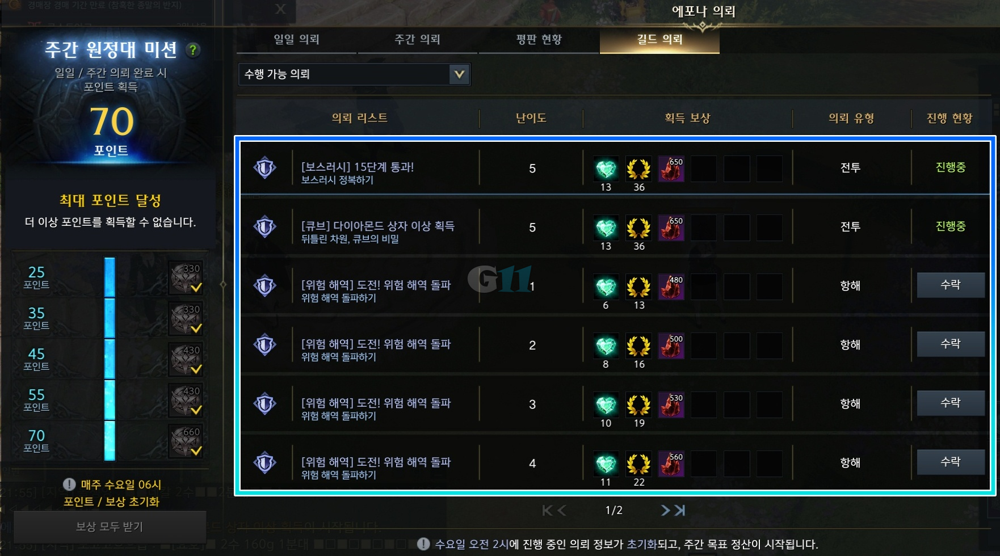
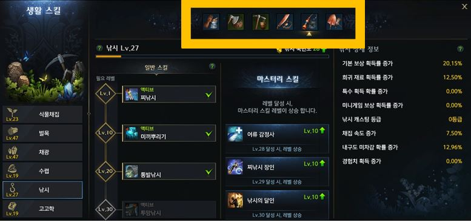
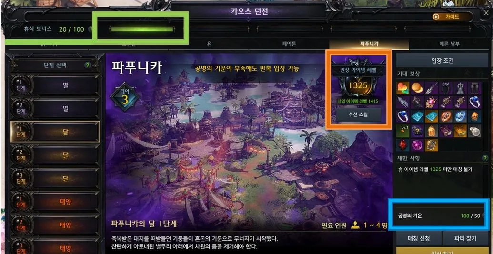
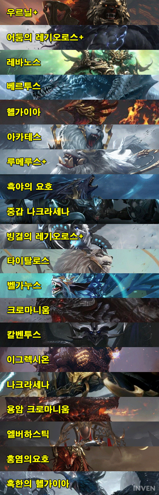
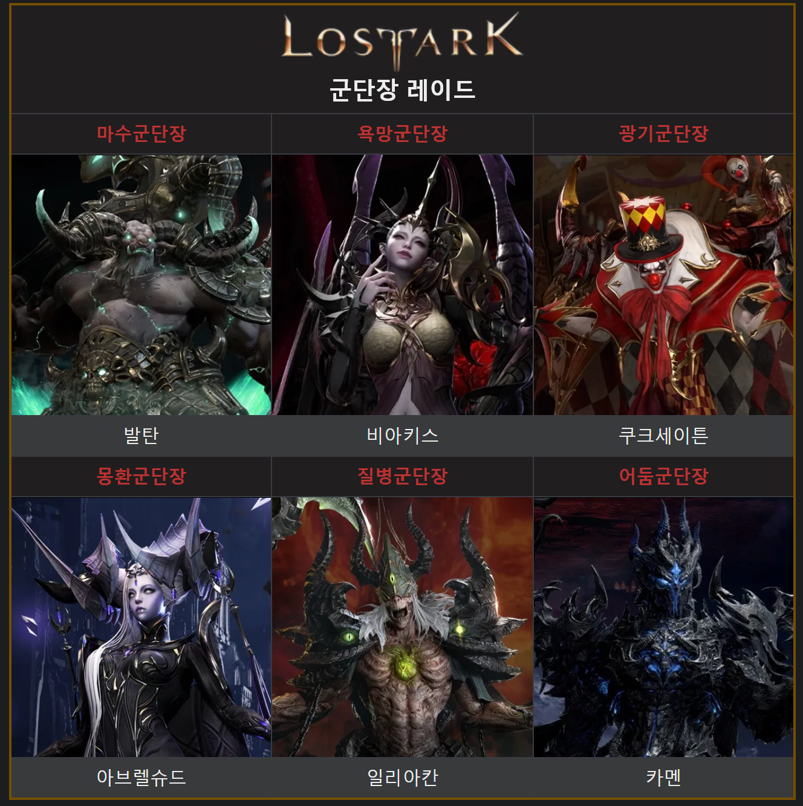
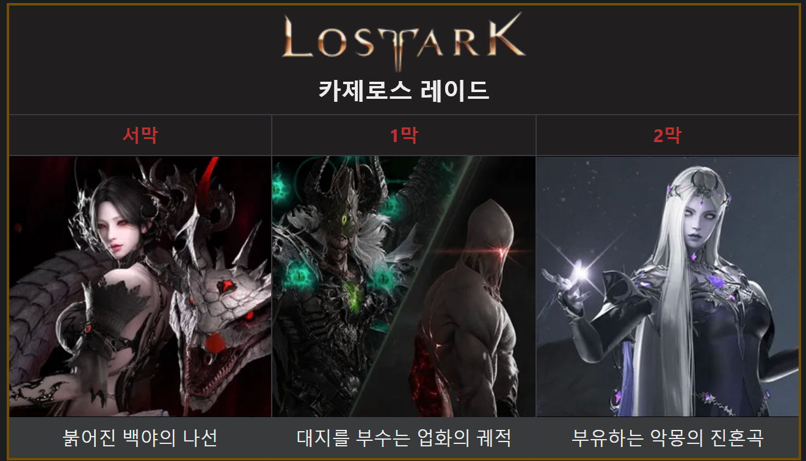

게임 이름 : 로스트아크
요약 설명
트라이포드 스튜디오에서 개발하고 스마일게이트 RPG가 운영하는 쿼터뷰 액션 MMORPG 게임이다.
공식 시스템 요구 사항
| 구분 | 최소 사양 | 권장 사양 |
|---|---|---|
| 운영체제 | Windows 7 SP1 이상 [64Bit] | Windows 10 [64Bit] 이상 |
| 프로세서 | 인텔 코어 i3 이상 AMD 라이젠 3 이상 |
인텔 코어 i5 이상 AMD 라이젠 5 이상 |
| 메모리 | 8GB 이상 | 16GB 이상 |
| 그래픽 카드 | NVIDIA GeForce GTX 460 AMD Radeon HD 6850 이상 |
1080p FHD NVIDIA GeForce GTX 1050 AMD Radeon RX560 2G 이상 |
|
1440p QHD NVIDIA GeForce RTX 2070 AMD Radeon RX5700XT 이상 |
||
|
Ultra Specs(4K, UHD) NVIDIA GeForce RTX 2080 AMD Radeon RX 6800 이상 |
||
| API | DirectX 11.0 이상 | |
| 저장 공간 | 70GB | |
로스트아크 콘텐츠 종류(모험)
1. 에포나 의뢰
일일 의뢰와 주간 의뢰로 분류되어 있으며 일일 의뢰는 하루에 기본 3개, 주간 의뢰는 한 주에 기본 3개 클리어 가능한 콘텐츠이다.
처음부터 수행 가능한 에포나 의뢰도 존재하지만 일정 조건을 수행해야만 수행 가능한 에포나 의뢰도 존재한다.
1회 이상 클리어한 의뢰의 경우 에포나 의뢰 즉시 완료권이라는 아이템으로 즉시 완료가 가능하다.
에포나 포인트라는 것은 원정대 공통으로, 일일 의뢰와 주간 의뢰를 통해 모을 수 있는 콘텐츠이다.
일일 의뢰는 완료할 경우 2점, 주간 의뢰를 완료할 경우 12점을 획득하며, 일정 포인트마다 에포나의 증표라는 것을 준다.
이 에포나 증표를 통해서 캐릭터를 성장시키거나 아이템을 구매하는 데 필요한 골드로 교환할 수 있다.
2. 생활
생활 레벨의 경우 내실이라고 불리는 즉, 캐릭터의 기본적인 능력치를 올리기 위해서 필요한 작업을 수행하는데 필요한 콘텐츠이다.
생활 레벨은 낚시, 벌목, 채광, 채집, 고고학 등을 통해 경험치를 얻을 수 있으며 일부 퀘스트 보상을 통해서도 생활 레벨 경험치를 얻을 수 있다.
또한 생활 도중 낮은 확률로 얻을 수 있는 플래티넘 필드 티켓을 통해 플래티넘 필드라는 생활 전용 필드로 이동해서 생활만을 즐길 수도 있다.
1) 채집
꽃이나 버섯을 채집하여 생활 레벨을 올리는 것
2) 벌목
나무로 도끼를 베어 아이템을 얻는 것
나무는 일정 시간마다 자라나며 큰 거목일 수록 많을 목재를 얻을 수 있고, 더 높은 등급의 목재를 획득할 수 있다.
이 목재들은 원정대 영지라는 곳에서 제작에 사용하거나 배를 수리하는 데 사용된다.
3) 채광
곡괭이를 쓰거나 채광 폭탄을 사용해서 광석을 부숴서 아이템을 얻는 것
채광 폭탄을 광석에 사용할 경우 한 번만 곡괭이질을 할 경우 두 번 곡괭이질한 보상이 나오는 '원석'으로 바뀌는 스킬이다.
4) 수렵
필드에 자유롭게 돌아다니는 토끼나 광석 또는 식물에 숨어있는 동물을 찾아내서 사냥하는 활동
사냥 후에는 고기를 채집하는 갈무리라는 행동을 수행할 수 있다.
5) 낚시
지정된 낚시터에서 간단한 미니 게임을 통해 물고기를 낚거나, 미끼 뿌리기라는 스킬을 통해 황금 물고기를 낚는 활동이다.
한 곳에서 계속해서 할 수 있다는 장점이 있지만 또한 이 장점이 반복 수행되다보면 지루해질 수도 있기 때문에 단점이라고도 할 수 있다.
6) 고고학
음파 탐지 액티브라는 스킬을 사용한 뒤 음파가 나오는 쪽으로 이동하여 탐색하면 유물이 묻힌 장소가 발견되고, 이를 파내면 아이템을 획득하는 방식으로 진행하는 활동이다.
도구 제작에 필요한 제작 키트를 얻을 수 있는 핵심 수단이기도 하다.
고고학 재료들을 모아 고고학 보물 지도를 만들고, 이 고고학 보물 지도를 통해 제작 키트를 획득하는 방식이다.
이 제작 키트를 통해 각종 생활에 필요한 숙련가, 전문가, 달인용 도구들을 만들 수 있다.
로스트아크 콘텐츠 종류(던전)
1. 카오스 던전
차원의 균열에 나타난 악마들을 처치한다는 컨셉의 던전이다.
로스트아크에서 가장 기본적인 던전/레이드 콘텐츠로 RPG 게임에서 사냥과 같은 기본적인 파밍 콘텐츠이다.
하루에 공명의 기운이라는 것이 100씩 충전되며, 1번 카오스 던전에 입장할 때마다 50씩 소모된다.
공명의 기운을 소모하지 않은 상태로 일일 컨텐츠 초기화 시간(새벽 6시)이 되면 남은 공명의 기운 50당 10의 휴식 보너스 게이지로 전환된다.
이 휴식 게이지를 20씩 소모하면 한 번 카오스 던전을 돌 때마다 보상을 2배로 얻을 수 있다.
몬스터를 처치 및 던전 클리어 시 기본적인 보상을 획득할 수 있으며, 실링과 악세서리, 장비, 트라이포드 전승용 아뮬렛, 파괴석/수호석 시리즈, 돌파석 시리즈, 무작위 어빌리티 스톤, 명예의 파편, 각인서, 1레벨 보석 등을 획득할 수 있다.
또한 매우 낮은 확률로 운명의 편린이라는 것을 획득할 수 있는데, 이것은 다량의 골드나 각종 성장 지원 아이템 등을 매우 많이 획득할 수 있다.
만약 공명의 기운이 없는 상태에서는 입장 가능하지만 일반적인 아이템을 대신 정화의 파편과 갈망의 결정, 경험치 물약(소), 장신구 등을 얻을 수 있다.
이 정화의 파편, 갈망의 결정을 이용해서 재련 재료 및 장신구 등을 교환할 수 있다.
2. 가디언 토벌
MMORPG 게임에서의 레이드와 비슷한 방식이라고 생각하면 되지만, 다른 MMORPG에서는 일반적인 파티 이상의 대규모 인원이 모여서 대형 던전에 입장 후 최종 보스의 패턴 파악과 기믹을 수행해서 클리어하는 방식이다.
하지만 로스트아크의 레이드는 4인 파티로 구성되어서 보스 몬스터를 일정 시간 안에 패턴 파악과 기믹을 수행해서 클리어하는 콘텐츠이다.
모든 가디언들은 체력이 일정 수치 이하가 되거나 특정 조건을 만족하면 맵의 무작위 지점으로 워프하여 휴식 시간을 가진다.
이 무작위 지점은 워프 직전까지의 위치도 포함하기 때문에 제자리에 워프할 수도 있지만 대부분은 다른 지점으로 워프된다.
각 가디언 토벌에서 부활 기회는 파티원 당 3번이 아니라 파티원 전체 당 3번이 주어지게 된다.
가디언 자체는 아이템을 거의 드랍해주지 않지만, 가디언 영혼 수확이라는 것을 통해서 대량의 아이템을 획득할 수 있다.
가디언 영혼 수확은 토벌 종류와 상관없이 하루에 1번으로 제한되어 있다.
3. 군단장 레이드
스토리에서 등장하던 군단장들과 대결하는 콘텐츠이다.
로스트아크에서 엔드 콘텐츠라고 불리며 발탄부터 카멘까지 모든 군단장들이 레이드로 나오게 되며, 단순히 군단장만을 상대하는 것이 아니라 군단장들의 하수 몬스터들을 중간 보스로 상대해야 한다.
로스트아크의 핵심 콘텐츠라고 할 수 있다.
로스트아크에서 엔드 콘텐츠라고 불리고 있기 때문에 모든 군단장을 전부 주당 1회씩 도전해서 클리어할 수 있다.
골드 보상의 경우는 엔드 콘텐츠 내에서 3번만 획득 가능하다.
4. 카제로스 레이드
카제로스 레이드는 로스트아크 1부의 최종장으로 불리는 엔드 콘텐츠이며 심연의 군주 카제로스를 물리치기 위한 여정과 그 전투를 담아낼 일련의 레이드이다.
로아온에서 디렉터는 이 레이드가 군단장 레이드와는 다른 완전히 새로운 방식의 레이드가 될 것이며, 역대급 스케일의 레이드가 될 것이라 발표했다.
'대전쟁'이라는 표현을 사용한 것을 보면 규모 면에서 기존 레이드와 차별화되는 요소가 있는 것으로 예상되고 있다.
때문에 일각에서는 8인 레이드에서 규모가 대폭 확대된 16인 또는 24인 레이드를 예상하고 있다.
현재는 서막 붉어진 백야의 나선 에키드나 레이드만 출시되어 있는 상태이고 2024년 7월말과 9월말에 각각 1막과 2막을 오픈할 예정이라고 로아온 섬머에서 발표했다.